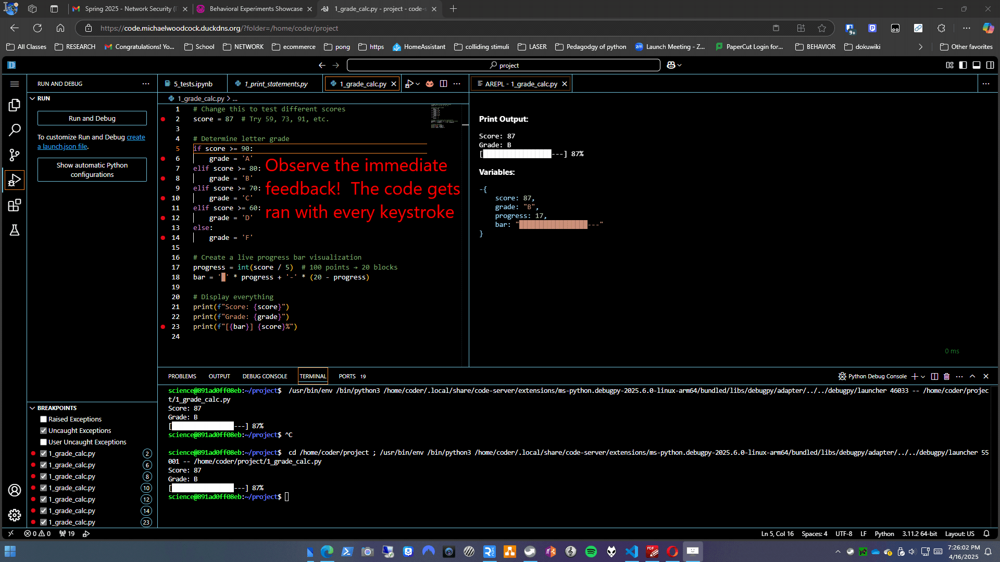

Research Examples showcase
Motivation:
In many fields such as psychology, neuroscience, linguistics, education, and mental health, experiments have long relied on controlled, lab-based environments with dedicated hardware. Thanks to fast internet, modern web technologies, and ubiquitous smart devices, we can now run precise experiments online without sacrificing temporal accuracy. This "game changer" allows us to collect data from larger, more diverse populations, and in environments where participants are more comfortable. In this showcase, you'll see both my personal examples and a curated collection of PsychoJS/jsPsych experiments.
My hope is that by providing these examples, I can inspire others to explore the potential of web-based experiments and contribute to the growing body of research in these area. I believe that by using the power of the browser and ubiquitous technology, we can conduct research with real innovation, ultimately leading to a better understanding of human behavior and cognition.
As a researcher, I am passionate about using technology to enhance our understanding of the mind and behavior. I believe that by leveraging the power of the web, we can create more engaging and effective experiments that can reach a wider audience. I hope that these examples will serve as a starting point for others to explore the possibilities of web-based research and contribute to the advancement of human knowledge.
Personal Examples
Behavior Contrast
Custom example demonstrating contrasting behavioral responses and integrated eye tracking. This browser version of the experiment is a work in progress and is not yet fully functional.
Colliding Stimuli
A novel experiment designed to test various theories using colliding stimuli. The web version of this experiment is a work in progress and is not yet fully functional. The python version on the other hand is functioning much better!
The python version has been extensively tested to deliver reinforcement within 1 rendered frame, or about 17 milliseconds on most PCs. Although many people believe python may not be fast enough for experiments requiring highly accurate and precise timing, as we can see in the animation, we can actually
use python and deliver feedback faster than the visual feedback offered for touch by the operating system itself! While python is not always the best choice for real-time experiments, it can be used effectively with the right libraries and optimizations.
This project started out with me writing the code from scratch before finding out how difficult and involved this project could be. When the thought emerged to check the web for existing examples, there were none. Searching for examples of adaptable code turned out to be the best way forward. First, I started by adapting billiards / pool table games to the task. When the required packages were too slow to render the feedback within one frame, I found a website dedicated to python data science that showcased an example simulating ideal gas particle collisions. This other example was much faster, and I adapted it to handle user input and display text and visual feedback based on behavioural principles and applied behavior analysis. It was written in Pygame, which is a great library for creating games and simulations in Python, as it uses a very efficient sdl2 wrapper backend to directly access mission critical functions at the operating system level with high priority, allowing us to render feedback as fast as the OS, or atleast the monitor, itself. On outdated hardware, the code can run at over 200FPS and still render feedback within one frame.
The python code has been streamlined as much as possible to minimize any performance penalty from interpreter or operating system or program process overhead.
The program has been designed to render feedback not only as fast as possible, but also exactly where the participant is looking. Potentially this will be helpful in ensuring positive reinforcement is delivered (and critically, percieved and understood) as close to 0 seconds as possible. Participants don't even have to move their eyes to see the effects of their interactions with the program. Further research may incorporate eye tracking and a web based backend to allow for real time feedback and data collection.
Rat Basketball
Although this project does not work in a browser and is not dedicated to humans, it is a fun example of how we can use the principles of Applied Behavior Analysis (ABA) to train rats to play basketball! Disclaimer: No rats were harmed in the making of this project. The rats are trained to play basketball using positive reinforcement (giving them food or treats) and operant conditioning techniques.
I did not train the rats myself, but merely focused on the programming and hardware aspects of the project. The rats were trained by graduate students at Georgia Southern University, and I was not involved in the training process. The project is designed to be a fun and engaging way to teach students about ABA principles and how they can be applied in real-world settings.
The project conributed to the publication of:
Ratsketball: Using Low-cost 3D-Printed Operant Chambers to Probe for Generative Learning
The python code is viewable at:
github.com/ratbasketball/rat_basketball
more info is available at:
My Projects Page (external)
Python Programming Education
This ongoing project is dedicated to making Python programming more accessible and engaging for students. It leverages principles from verbal behavior analysis(ABA), textual feedback, and linguistic learning theory to create a dynamic and supportive learning environment. Our goal is to improve student understanding and retention of core programming concepts through interactive lessons and real-world applications.
Pictures depict the different feedback rates between live interpreters and the traditinal click to run interpreters. As pictured: One delivers feedback with every keystoke, while the other requires deliberate user action to access feedback.
